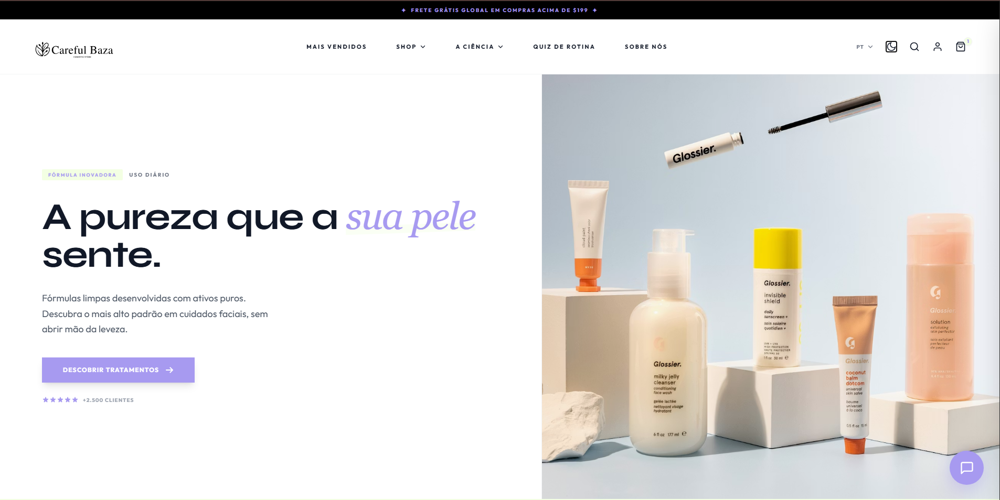

CarefulBaza (E-commerce)
Arquitetura de Back-end para plataforma de dropshipping, construída em uma infraestrutura unificada com foco em alta disponibilidade.
Estudante de ADS na FIAP (conclusão em 2025), focado em arquitetura de software, sistemas distribuídos e infraestrutura em nuvem. Experiência prática na construção de APIs resilientes, microsserviços e integração de dados visando performance e escalabilidade.
Estudante de Análise e Desenvolvimento de Sistemas na FIAP, apaixonado por construir soluções robustas. Meu objetivo é projetar sistemas escaláveis de alta performance, com foco em me tornar Engenheiro de Software Sênior em grandes empresas de tecnologia e finanças.
Aplicações práticas de arquitetura de software, back-end e engenharia de dados.

Arquitetura de Back-end para plataforma de dropshipping, construída em uma infraestrutura unificada com foco em alta disponibilidade.

Pipeline de dados e integração comercial para automação de pedidos e gerenciamento de cardápios.

Simulação de sistema de atendimento e triagem utilizando inteligência artificial, modelagem de banco de dados e front-end.
Me mande uma mensagem — respondo rapidinho.